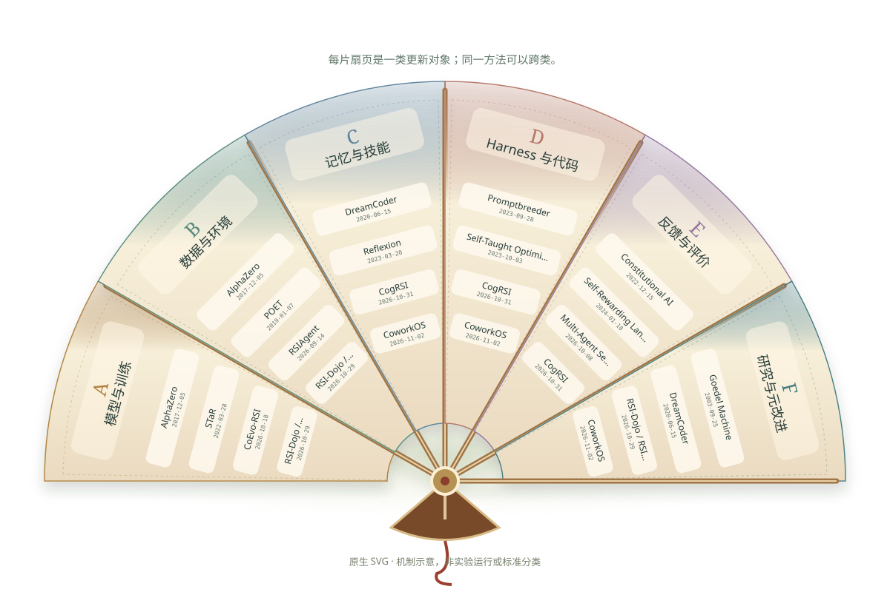

根系 · 分途 · 万叶
自我改进，枝繁叶茂
88 条公开记录 · 6 个分析家族 · 24 条阅读支路
2022 年前的历史时间压缩显示 · 拖动日期回看；首发待核记录仅在完整图出现。
Beyond a
better answer.
A better improver.
What changes, what persists, and what actually improves? Explore the mechanisms behind self-improving AI—one feedback loop, one source, one boundary at a time.
A map, not a leaderboard.
Every chart is calculated from this public snapshot. Publication activity is not a measure of capability, quality or independent replication.
Dated public research activity
12 monthly binsWhat is being improved?
non-exclusiveSix objects. Many ways to change.
An operational taxonomy, not a field-wide standard. Connections mean categorization—not technical inheritance or measured causal influence. A method can belong to several families.
Architecture before abstraction.
Author-created family-level diagrams explain the idea. Representative flows explain one route. Licensed paper figures remain separate and versioned.
Follow the feedback. Not the hype.
More iterations do not automatically mean deeper recursion. These levels describe evidence to look for, not scores assigned to papers.
New work. Open questions.
Latest dated public records, with release-date caveats retained. Revisions never replace first-public dates. Read each mechanism with its limits.
Harness improvement, in focus.
Selected for closer reading—not a latest-date ranking. Compare mechanisms, mutable state and evidence limits across these focus records.
Trace the public record.
Paper v1 or explicitly labeled release/display dates; unresolved conflicts stay visible. Revision dates remain separate. Switch to non-exclusive family or institution lanes. Equal spacing is not a time scale.
Mechanisms, with their limits.
Search the curated record, then inspect the source and reading scope. Benchmarks, frameworks, theory and methods are labeled separately. English summaries do not claim new source verification.
The people behind the record.
Only supplied institution assignments are shown, referring to the cited paper version—not current employment or exclusive ownership. Paper timeline dates remain v1 / first public. A GitHub owner, model provider or API vendor does not establish affiliation. Multiple affiliations are non-exclusive.
See where the next round begins.
Authored mechanism illustrations—not measured experiment traces. Select any node or advance one step. Dashed feedback means reuse, never guaranteed progress.
Understand the field, not just the papers.
A cross-survey synthesis of improvement targets, responsibility, feedback, inheritance and future improvement capability.
Unfold the methods.
The fan opens one family at a time. Classic and recent methods share each leaf; select a family or method to explore the evidence.

A–F is an analytical taxonomy, not an autonomy ranking. Dates follow first public evidence; newer revisions do not become new roots. Decorative unfolding is not research traffic.
Six families, six different mechanisms
Questions that organize the literature
Read the implementation.
Six public implementations with source-pinned architecture and execution guides. Popularity is a dated snapshot, not an RSI ranking. Non-commercial licenses are not presented as uniformly OSI open source.
Find the implementation that fits your question.
A broader navigation collection, separate from the six pinned source-code reviews above. Snapshot numbers and README-based claims are not independent code audits or replications.
Better feedback. Stronger evidence.
Author-reported results are not independent replications. No record here establishes unlimited open-world recursive acceleration. Inspect what was read, what was tested and what remains uncertain.
Choose a trustworthy signal first.
Back to the original architecture.
Only explicitly permitted figures are reproduced. Cropped details are labeled; these are not the family-level diagrams above. Original authors, versions, modifications and licenses remain attached.
Go deeper, not just wider.
The portal is bilingual. Detailed technical chapters and inherited evidence notes are currently in Chinese; English summaries are navigation aids, not full chapter translations.